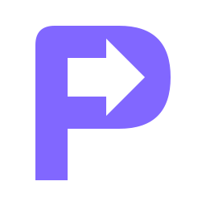

Horizontal tabs
Cmd+Right
Research is active. Draft is to the right.

Push My TabsSwitch and move tabs with shortcuts that follow your tab layout.
Research is active. Draft is to the right.
Research is active. Draft is below.
Example Mac bindings with the adaptive Shortcut Preset. Check or change assignments in your browser.
Horizontal: Left/Right switch · Up/Down move
Vertical: Up/Down switch · Left/Right move
Horizontal tabs switch left and right. Vertical tabs switch up and down. The other axis moves the active tab. Start with the adaptive Shortcut Preset, or choose your own mapping.
Firefox reads its vertical-tabs setting. Chrome estimates the layout from window geometry. Confirm an estimate or choose a manual layout whenever you need to.
Edit assignments in Firefox or open Chrome’s shortcut editor. The examples here don’t change your browser’s keys.
Use TabLoop to cycle across windows in last-used order. Optional commands also duplicate, pin or mute a tab, or move it to a new window.
No accounts, analytics, advertising or remote code. Settings and saved layout profiles stay in your browser.
Read the extension privacy policyChrome uses temporary active-tab access after a shortcut or popup action for local layout profiles. Firefox uses storage and browser settings without reading page data.
No extension data is transmitted to the developer or third parties. This website is hosted by GitHub Pages; see the website privacy notice for hosting details.